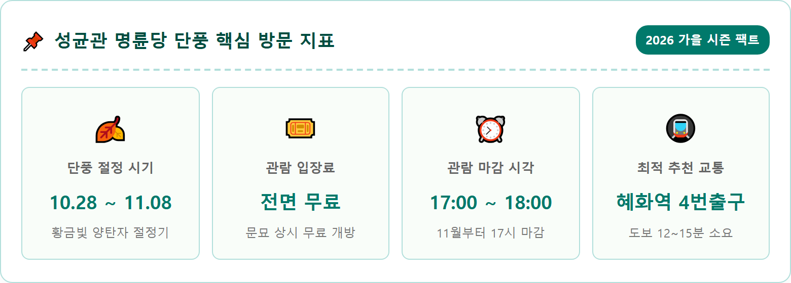
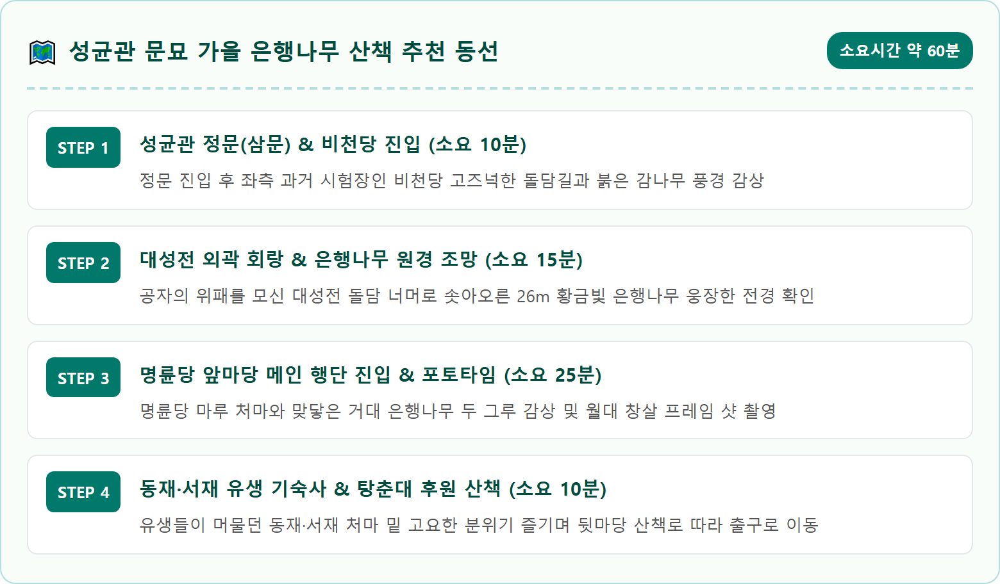
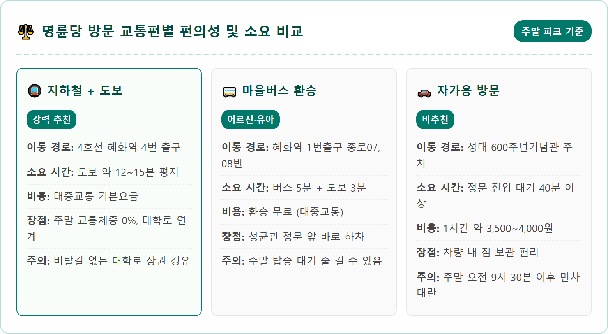
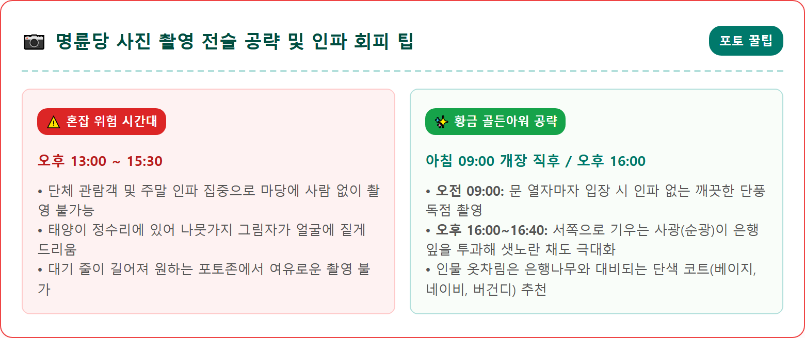
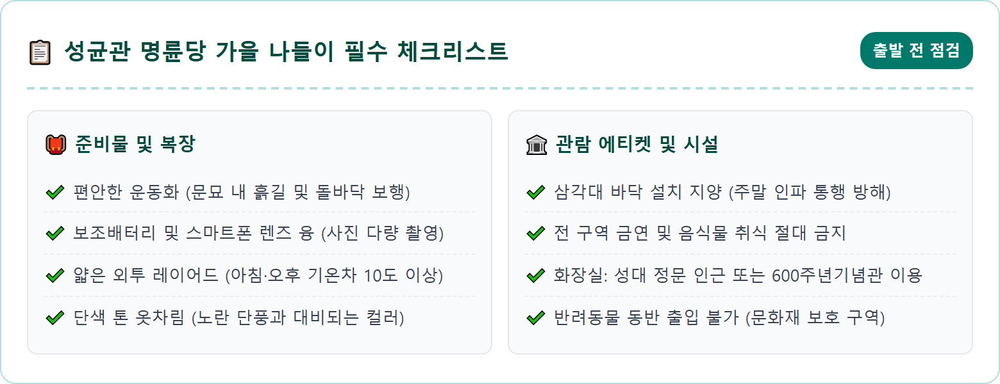
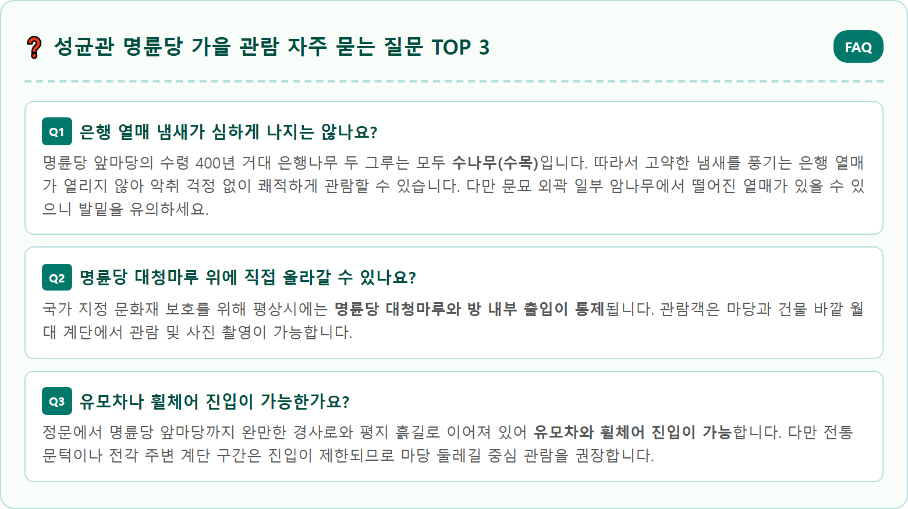

A breathtaking photorealistic wide shot of the historic Myeongnyundang lecture hall at Sungkyunkwan in Seoul during late autumn. Two gigantic 400-year-old natural monument ginkgo trees with overwhelmingly dense, vibrant golden-yellow foliage towering over traditional Joseon dynasty wooden hanok architecture. Golden autumn ginkgo leaves gracefully falling like yellow snow onto the stone-paved courtyard. Soft, warm late-afternoon sunlight filtering through the yellow leaves, casting gentle shadows. Clear autumn sky, peaceful historical ambience, authentic cultural heritage atmosphere, ultra-high resolution, 8k, master photography, 1:1 aspect ratio.






| 구분 | 상세 안내 |
|---|---|
| 명칭 및 주소 | 성균관 문묘 및 명륜당 (서울시 종로구 명륜3가 53) |
| 천연기념물 지정 | 천연기념물 제59호 (서울 문묘 은행나무, 수령 약 400~500년) |
| 입장료 | 전면 무료 (사전 예약 불필요) |
| 관람 시간 | 하절기(3~10월) 09:00 ~ 18:00 / 동절기(11~2월) 09:00 ~ 17:00 |
| 단풍 절정기 | 10월 28일경 ~ 11월 8일경 |
| 추천 교통편 | 지하철 4호선 혜화역 4번 출구 도보 15분 / 마을버스 종로07, 종로08 |
| 주차 시설 | 성균관대 600주년기념관 지하주차장 (유료, 30분 2,000원 / 추가 10분당 500원) |